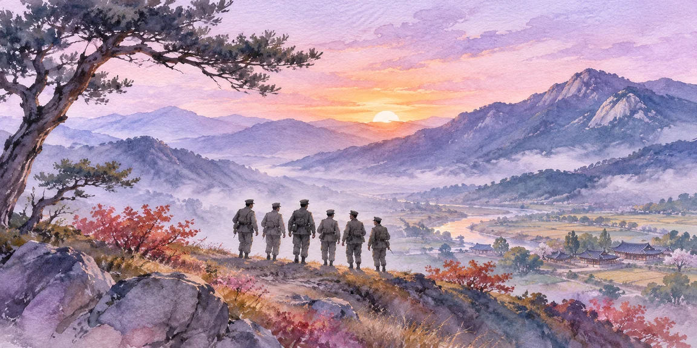

Do You Believe in Miracles?
읽고 · 말하고 · 생각하는 영어

학습 안내
Do You Believe in Miracles?
기적의 가평전투
핵심 단어 · Key Vocabulary
miracle 기적
break through 돌파하다
field artillery battalion 야전포병대대
central front 중부 전선
commander 지휘관
critical situation 위급한 상황
Lieutenant Colonel 중령
United Nations forces 유엔군
soldier 병사
relative 친척
troop 군대, 부대원
with one heart and mind 한마음 한뜻으로
Chinese Communist forces 중공군
believe in 믿다
enemy 적군
Presidential Unit Citation 대통령 부대 표창
attack 공격하다 / 공격
against all odds 모든 역경에도 불구하고
battle 전투
determination 결단력, 의지
defeat 패배
sacrifice 희생
lose a soldier 전사자를 내다
overcome 극복하다
recapture 재점령하다
unity 단결
strategically important 전략적으로 중요한
회화 패턴 · Speaking Patterns
1. believe in + noun
I believe in miracles when people refuse to give up.
나는 사람들이 포기하지 않을 때 일어나는 기적을 믿습니다.
2. against all odds
They won the battle against all odds.
그들은 모든 역경에도 불구하고 전투에서 승리했습니다.
본문 읽기 · Reading
On May 26, 1951, the U.S. 213th Field Artillery Battalion, commanded by Lieutenant
Colonel Frank Dalley, was made up, unusually, of young men who all came from the same
small town called Cedar City in Utah, USA. Only 240 soldiers remained when they came
under attack from more than 4,000 Chinese Communist troops. Yet they won the battle
without losing a single soldier.
The Chinese Communist forces were trying to recapture Seoul. Gapyeong was a
strategically important area. If the enemy broke through Gapyeong, the central front
would be in danger, and Seoul could fall again. It was a critical situation.
Their victory gave great hope to the United Nations forces, who were going through a
difficult time.
Moreover, the soldiers in this unit had grown up together. They had attended the same
schools and the same church, and many of them were friends, brothers, and relatives.
With one heart and one mind, they believed in a miracle.
For this victory, the 213th Field Artillery Battalion received the Presidential Unit Citation
from President Harry S. Truman.
한국어 해석 · Translation
1951년 5월 26일, 프랭크 달리 중령이 지휘하는 미군 제213야전포병대대는 특이하게도 미국 유타주의
시더시티라는 작은 도시에서 온 청년들로 이루어져 있었다. 그들은 240명만 남은 상태에서 4,000여 명
의 중공군의 공격을 받았지만, 단 한 명의 전사자도 없이 승리했다.
중공군은 서울을 재점령하려고 하고 있었다. 가평은 전략적으로 매우 중요한 지역이었다. 만약 적군이
가평을 뚫고 들어온다면 중부 전선이 위태로워지고 서울이 다시 함락될 수도 있는 매우 위급한 상황이었
다.
그들의 승리는 어려움을 겪고 있던 유엔군에게 큰 희망이 되었다.
또한 이 부대원들은 모두 함께 성장한 사람들이었다. 같은 학교와 같은 교회를 다녔으며, 서로 친구이자
형제, 친척인 경우도 많았다. 그들은 한마음으로 기적을 믿었다.
이 승리로 제213야전포병대대는 해리 S. 트루먼 대통령으로부터 미국 대통령 부대 표창(Presidential
Unit Citation)을 받았다.
토론 질문 · Discussion Questions
How do you think the shared background and close relationships of the soldiers in the 213th Battalion affected their teamwork and performance in battle?
213대대 대원들의 같은 고향 출신이라는 배경과 깊은 친분 관계가 전투에서의 팀워크와 전투력에 어떤 영향을 미쳤을까요?
In your opinion, what factors contributed to winning a battle against such overwhelming odds - was it strategic advantage, psychological strength, or a "miracle"?
수적으로 압도적으로 불리했던 전투에서 승리할 수 있었던 주요 요인은 무엇이라고 생각하시나요? 전술 적 우위, 정신력, 혹은 '기적'이었을까요?
Do you believe in "miracles" in military history or real-life crises? What does the word "miracle" mean to you in this context?
전쟁사나 현실의 위기 상황에서 일어나는 '기적'을 믿으시나요? 이 맥락에서 '기적'이란 단어는 본인에게 어떤 의미인가요?
If you faced an overwhelming, impossible obstacle in your own life today, what would be your strongest "weapon" or value - like the unit's solidarity - to overcome it?
오늘 당신의 삶에서 도저히 불가능해 보이는 커다란 난관에 부딪힌다면, 그 부대가 보여준 단합력처럼 이를 극복해 낼 당신만의 가장 강력한 '무기'나 가치는 무엇인가요?
예시 답변 · Sample Answers
Their personal trust strengthened teamwork and helped them protect one another as one team.
서로에 대한 깊은 신뢰가 팀워크를 강화하고 한 팀으로 서로를 지키게 했다고 생각합니다.
Strategy, artillery power, and unity all mattered; disciplined teamwork also made the victory possible.
전략과 포병 화력, 단합력, 그리고 규율 있는 팀워크가 승리를 가능하게 했다고 생각합니다.
To me, a miracle is an almost impossible result created by courage, timing, strategy, and luck.
저에게 기적은 용기와 타이밍, 전략, 운이 함께 만들어 낸 거의 불가능해 보이는 결과입니다.
My strongest weapon would be resilience and support from people I trust.
저의 가장 강력한 무기는 회복탄력성과 믿을 수 있는 사람들의 지지일 것입니다.
오늘의 메시지 · Today’s Message
때로는 기적은 포기하지 않는 사람들로부터 시작된다.
Sometimes, a miracle begins with people who refuse to give up.
영작 연습 · Write It Yourself
1. 나는 어려운 상황에서도 희망을 믿습니다.
2. 그들은 모든 역경에도 불구하고 하나 되어 싸웠습니다.